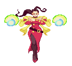
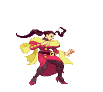
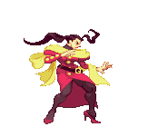
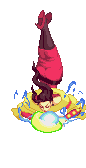
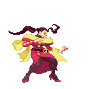
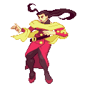
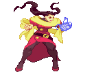
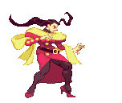

Rose (Street Fighter)
Setplay fighters heavily rely on calculated setups. They shine in setplay situations - creating scenarios in which they are in extreme advantage and the opponent has limited options where they can then easily capitalize. That usually means striking the opponent during wakeup after a knockdown and creating mix-up situations. Set play characters can overtake and pressure their opponents very easily by executing these pre-planned situations. However, they have very limited tools outside of this game plan if their opponent does not allow themselves to be set up.


- Hard knockdown
- Average health pool
- High damage combos
Pros



- Unpredictable
- Strong knockdown power
- Match-up experience advantage
Cons

- Limited tools outside setups
- Requires setup or knockdown
- Weaker in non-advantageous situations
How should I play as this fighter?
Use your strong knockdowns to create advantage points for yourself. Try to plan your combos ahead of time, so you can maximize damage during your opponent’s wakeup after their knockdown.
How can I beat this fighter?

They will target the window of wakeup after you get knocked down. Observe if they have any patterns in attacks after knocking you down, and devise different workarounds to get out of your wakeups to keep them guessing and avoid getting stuck in this loop of knockdown and combos afterward.
Examples:
- Rose (Street Fighter Alpha, 1995)
- Blanka (Street Fighter II: The World Warrior, 1991)
- Millia Rage (Guilty Gear, 1998)
Evelynn's Notes
Difficulty: ★ ★ ★ ★ ☆
The concept and strategy of setplay fighters is easy to understand. However, executing this seemingly straightforward game plan requires a lot of pre-planned moves and setups, hence the name. This could be tricky for newer players, as setplay characters only really shine once the opponent falls into their trap.